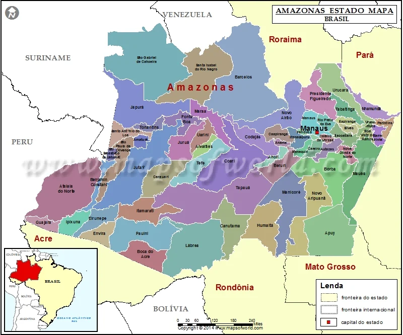
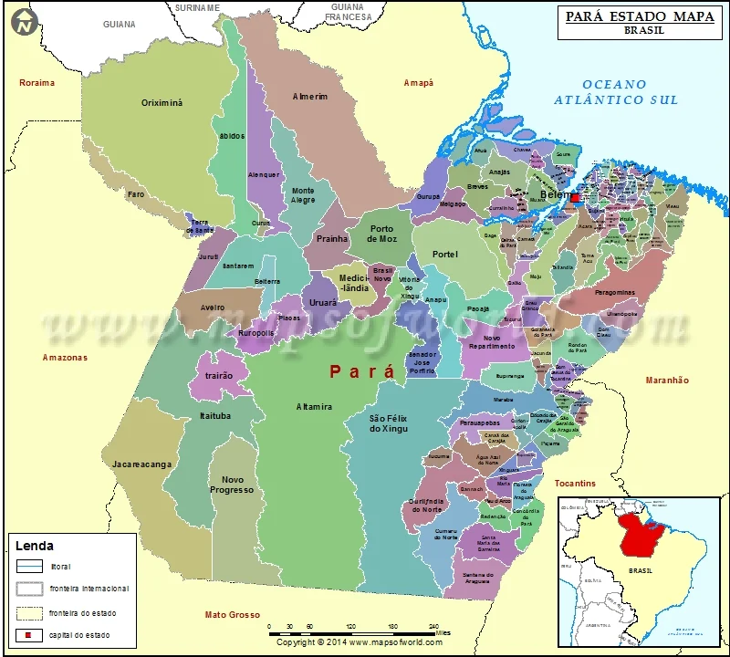
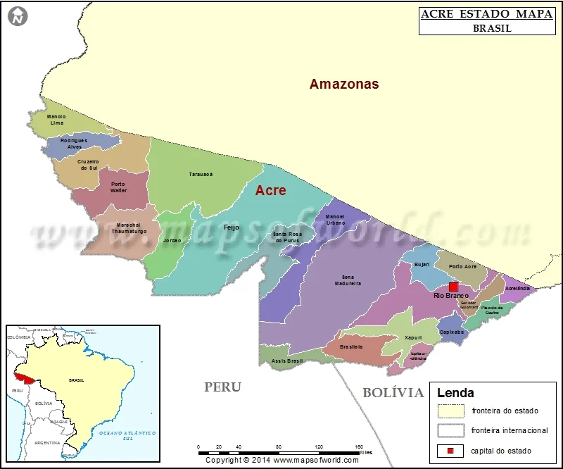
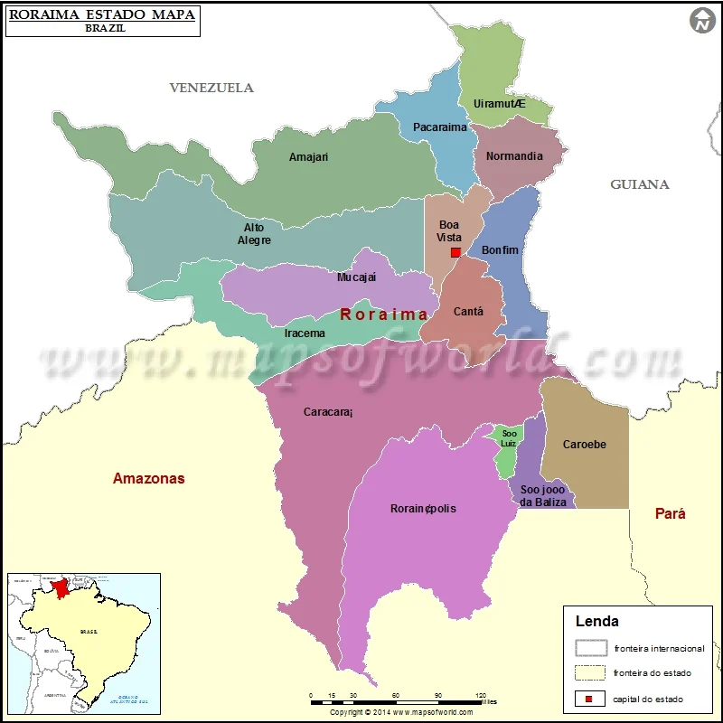
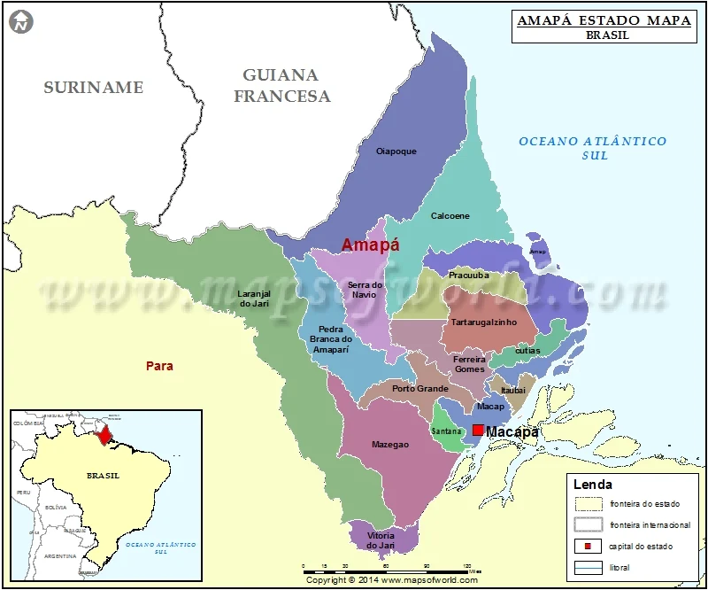
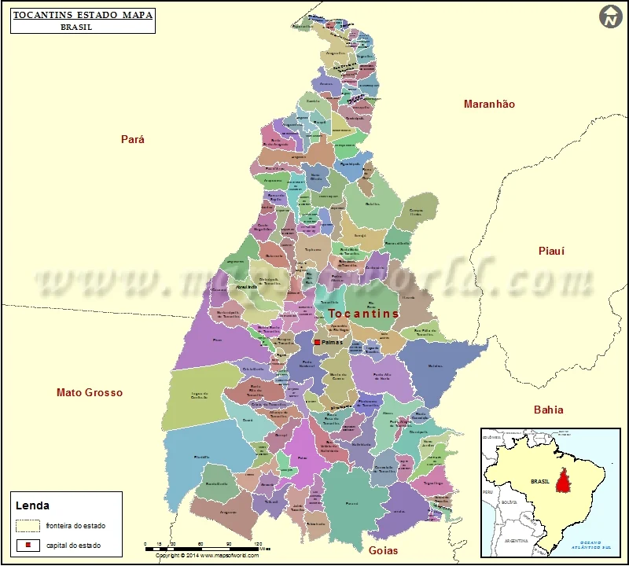
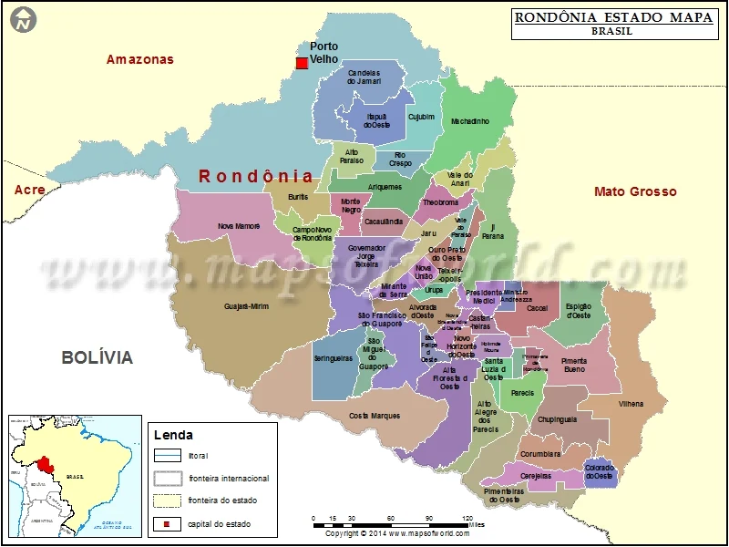
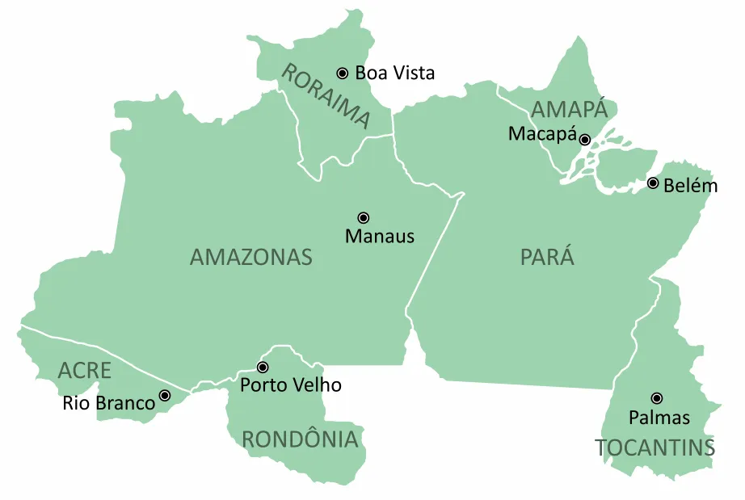

Estado / Sigla

A descoberta da região da Amazônia, hoje correspondente aos estados do Pará e Amazonas, é de responsabilidade do espanhol Francisco de Orelhana. O viajante do século XVI descreveu as paisagens vistas e disse também ter encontrado mulheres amazonas guerreiras, uma história cheia de fantasias, mitos e folclores. Após esse evento, a região ficou esquecida na história brasileira, sendo somente por volta de 1637 relembrada pelos frades Domingos de Brieba e André Toledo, que realizaram uma expedição ao rio Amazonas e despertaram o interesse dos capitães portugueses na região.

O povoamento do atual território do Pará foi iniciado por um explorador espanhol, Francisco de Orellana, ainda no século XVI, por meio do desbravamento da foz do rio Amazonas. Já a chegada dos portugueses à região é datada de 1616 e explicada pelo interesse dos colonizadores em dominar o vale fluvial do Amazonas, considerado um ponto estratégico do Norte do Brasil.

O Acre era, até a segunda metade do século XIX, habitado pelas populações indígenas e ainda fazia parte dos territórios boliviano e peruano. A partir de 1877, motivados pela exploração do látex, os primeiros migrantes da Região Nordeste do país chegaram ao território acriano. Entre 1899 e 1909, disputas pelo domínio da área foram travadas entre os bolivianos, peruanos e os brasileiros que ali estavam.

A história roraimense é marcada por disputas pela ocupação do território, seja em relação aos colonizadores e às populações nativas, seja, ainda, pela intenção de forças estrangeiras na localização estratégica de Roraima. A ocupação de Roraima foi iniciada pelos portugueses, por meio do desbravamento da planície do rio Branco, partindo do estado do Amazonas. Já forças estrangeiras, em especial, inglesas, faziam incursões no território a partir da Guiana

O Amapá tornou-se oficialmente um estado no ano de 1988, quando adquiriu autonomia a partir das disposições estabelecidas pela nova Constituição Federal, promulgada naquele mesmo ano. Seu primeiro governador tomou posse em 1990. A área onde se situa o Amapá, no entanto, teve sua primeira ocupação por parte dos colonizadores portugueses ainda no século XVII. Em 1637, sob o nome de capitania da Costa do Cabo Norte, o território foi cedido ao bispo português Bento Manuel Parente. Entre o final do século XVII e o século seguinte, a capitania foi alvo de disputas entre ingleses, holandeses e franceses pela posse do território, que não saiu dos domínios portugueses.

A criação do estado do Tocantins ocorreu a partir do artigo 13º do Ato das Disposições Constitucionais Transitórias da Constituição, em 5 de outubro de 1988. Na ocasião o estado foi criado por meio da divisão de Goiás na porção norte. As primeiras eleições foram realizadas pelo Tribunal Regional Eleitoral de Goiás, em 1988, junto com as eleições municipais goianas. Na ocasião definiu-se que seriam eleitos governador, senadores, deputados federias e estaduais, e a cidade de Miracema (TO) foi escolhida como capital do Tocantins, por ser uma cidade localizada na região central do estado.

O atual território de Rondônia foi umas das últimas áreas colonizadas do Brasil. A preocupação com a fronteira do extremo oeste do país aumentou em razão das frequentes invasões por forças estrangeiras, assim como pela indefinição dos domínios territoriais de Espanha e Portugal na América do Sul. Desse modo, por meio da assinatura do Tratado de Madri (1750), Portugal assegurou o território rondoniense, compreendido pelas terras localizadas na margem direita do rio Guaporé. O mapeamento do território estadual foi realizado por meio do desbravamento dos rios, importantes vias de transporte do estado, sendo que, no ano de 1781, as fronteiras terrestres foram oficialmente marcadas.

Região Norte é maior região do Brasil em extensão territorial e envolve sete estados brasileiros: Acre, Amapá, Amazonas, Pará, Rondônia, Roraima e Tocantins. Pela grande extensão, também faz fronteira com alguns países, sendo eles: Bolívia, Peru, Colômbia, Venezuela, Guiana, Suriname e Guiana Francesa. A região possui uma demografia baixa, com cerca de 15.864.454 habitantes, respondendo por apenas 8% do povo brasileiro. Essas pessoas estão distribuídas em uma área territorial de 3.853.575,6 km², correspondendo à menor densidade demográfica do país, com 4,12 habitantes/km². Atualmente sua economia apresenta-se diversificada, com atividades industriais, agropecuária e extrativismo.